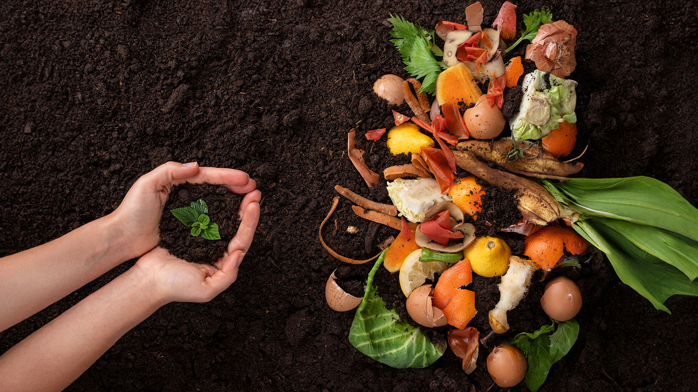
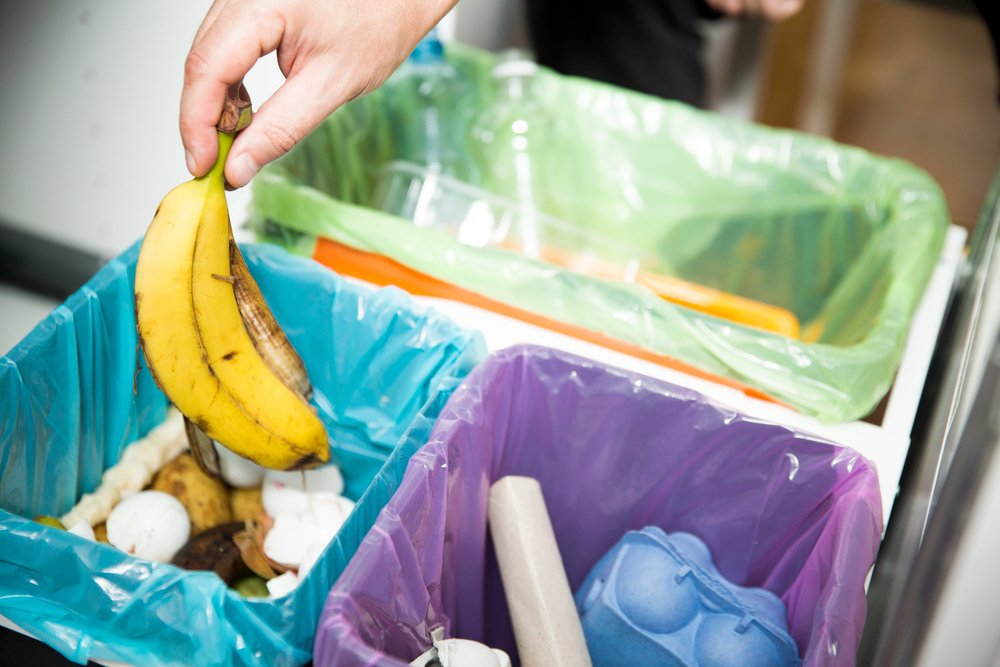
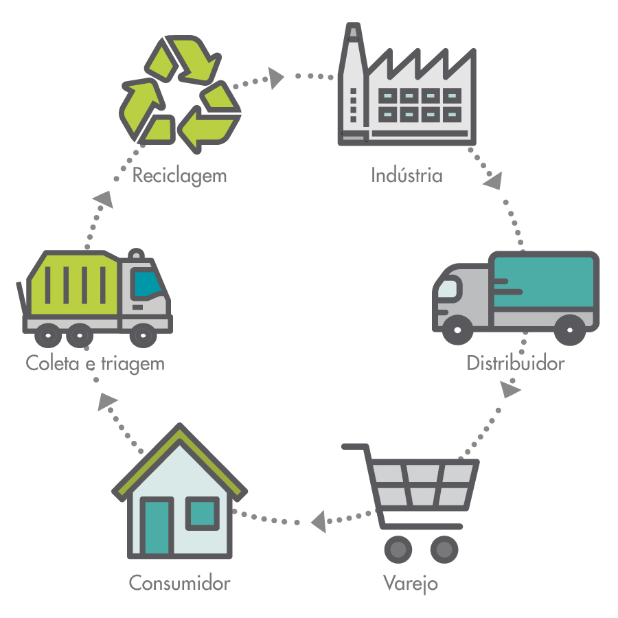

Reaprofeitamento de Resíduos no campo
- Reaprofeitamento de resíduos no campo rural: O reaproveitamento de resíduos no campo rural é crucial para a sustentabilidade ambiental e econômica. Técnicas como a compostagem, a utilização de biodigestores e a reciclagem de materiais são importantes para transformar resíduos em recursos. A compostagem, por exemplo, transforma restos orgânicos em adubo, beneficiando a agricultura local. Além disso, a coleta seletiva e a educação ambiental são importantes para conscientizar sobre a gestão de resíduos.
- Economia dos resíduos no campo:Têm vários benefícios de como reaproveitar como a redução de custo que é a compostagem que permite a produção de adubos naturais assim reduzindo a compra de fertilizantes químicos, juntos com o aumento de produtividade que tem o solo amis fértil resultanto a da adubação orgânica que gera renda de como reaproveitar os resíduos que gera novas oportunidades de negócio no campo.
- Os metodos de reaproveitamento: Cobertura Vegetal: Utilizar restos vegetais como cobertura do solo para proteger o solo e fornecer matéria orgânica. Reciclagem de Nutrientes: Reciclar nutrientes presentes nos resíduos agrícolas para melhorar a qualidade do solo. Produção de Papel e Embalagens: Utilizar resíduos agrícolas, como bagaço de cana, para a produção de papel e embalagens.
Como saber reaproveitar os resíduos e gerar a Economia do campo:
Reaprofeitamento de Resíduos da Cidade
O que gera o reaproveitamento de resíduos na cidade:
- Reaprofeitamento de resíduos na cidade: . A coleta seletiva recolhe resíduos secos (papéis, plásticos, metais, vidro, etc.) e úmidos (restos de alimentos). Os Ecopontos permitem o descarte correto de materiais recicláveis, resíduos de construção, eletrônicos e outros. a reciclagem e gera renda para catadores, mostrando um exemplo de reaproveitamento com sucesso.
- Economia dos resíduos da cidade:O reaproveitamento de resíduos, ou reciclagem, traz inúmeros benefícios econômicos para as cidades. Além de gerar empregos e renda para a população, a reciclagem reduz custos de produção para as empresas, impulsiona a economia local e minimiza a poluição, protegendo o meio ambiente que reduz a poluição e conserva os recursos naturais, que pode gerar novos empregos na áreas como coleta seletiva que processam os resíduos
- Como aproveitar os resíduos nas casa?:Você pode criar uma composteira em casa no fundo do quintal para colocar nas usas hortas e jardins, isso tem várias benefícios como diminuir a quantidade de lixo e o aumento de produção de adubos que podem ter várias possibilidades como a vermicompostagem que usam minhocas para acelerar a decomposição.
As diferencias de reaproveitamento
Como pode ter vários tipos de reaproveitamento:
- Os 2 tipos de reciclagem: A reciclagem química; é um processo que transforma resíduos plásticos em novos materiais ou insumos químicos, através de alterações químicas que modificam a estrutura molecular do plástico. A reciclagem energética; também conhecida como recuperação energética, é uma técnica que transforma resíduos em energia, geralmente térmica ou elétrica, por meio de processos como incineração, combustão ou gaseificação. Esta técnica visa aproveitar o potencial calorífico dos resíduos que já não podem ser reciclados ou reutilizados de outras formas.
- Como fuciona os 2 tipos de reciclagem:A reciclagem energética funciona por Coleta e Triagem: Os resíduos sólidos são coletados e triados para separar materiais recicláveis. Processamento: Os resíduos não recicláveis são então processados para gerar energia. Incineração/Combustão/Gaseificação: Através de processos controlados, os resíduos são queimados para gerar calor, que pode ser transformado em energia elétrica ou térmica, ou ainda em combustíveis alternativos. E a reciclagem química funciona por Quebra das moléculas: As moléculas do plástico são quebradas em componentes menores e mais simples, como monômeros ou hidrocarbonetos. Produção de novos materiais:Esses componentes podem ser usados para produzir novos plásticos, combustíveis, ou outros produtos químicos. Exemplos de processos:A pirólise (decomposição térmica) e a gaseificação são métodos comuns em reciclagem química, que utilizam calor e catalisadores para quebrar as moléculas do plástico.
- Como volta os resíduos para os consumidores: Para que resíduos voltem aos consumidores de forma eficaz, a logística reversa e a reciclagem são essenciais. A logística reversa envolve a coleta e o tratamento de resíduos pós-consumo para reutilização ou descarte adequado. A reciclagem, por sua vez, transforma materiais em novos produtos, permitindo que eles voltem ao ciclo econômico. A separação correta de resíduos no local de origem é crucial para o sucesso desses processos.